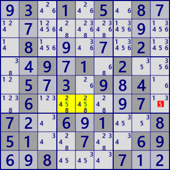
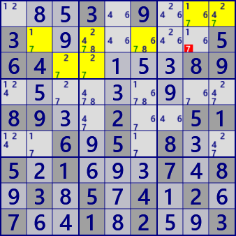

LockedCandidate
LockedCandidate has two types.
Type 1
If the digit N is only one row in the block,
it is excluded from the same row of the other block.
This also applies to the column direction.
In block b5, the digit #5 is only r6.
Therefore, in r6c9 of block b6, the digit #5 is excluded from the candidates.
.3.1.5.8...........8.....2...9.1.2...5.3.9.4..6.....7.7..6.1..851..7..69..8...7..
type 2
 LockedCandidate type 2 is a solution that limits where the digits of the remaining blocks are located
when there are digits in only two lines of two blocks.
Focus on the #7 in the figure on the left. In b1 and b2, #7 exists only in r1 and r2.
At this time, in b3, #7 is in r1. Therefore, in b3, #7 is not in r2 and r3.
...3.9...3.......564.....89.........89..2..51..6.5.8..5.1...7.8.3.5.4.2.7..1.2..3
LockedCandidate C# program
The essential analysis part is about 10 steps in each of types 1 and 2.
public class LockedCandidateGen: AnalyzerBaseV2{
public LockedCandidateGen( GNPX_AnalyzerMan pAnMan ): base(pAnMan){ }
public bool LockedCandidate( ){
for( int no=0; no<9; no++ ){
int noB=(1<<no);
int[] BRCs = new int[9];
foreach( var P in pBDL.Where(Q=>(Q.FreeB&noB)>0) ){ BRCs[P.b] |= (1<<P.r)|(1<<(P.c+9)); }
//==== Type-1 =====
for( int b0=0; b0<9; b0++ ){
for( int hs=0; hs<10; hs+=9 ){ //0:row 9:collumn
int RCH=BRCs[b0]&(0x1FF<<hs);
if( RCH.BitCount()==1 ){
int hs0=RCH.BitToNum(18);
if( pBDL.IEGetCellInHouse(hs0,noB).Any(Q=>Q.b!=b0) ){ //Type 1 is found
.
. (Solution report code)
.
return true;
}
}
}
}
//==== Type-2 =====
for( int b0=0; b0<9; b0++ ){
int b1, b2, rcB0, rcB1, rcB2;
for( int hs=0; hs<10; hs+=9 ){ //0:row 9:collumn
int hsX=0x1FF<<hs;
if(hs==0){b1=b0/3*3+(b0+1)%3;b2=b0/3*3+(b0+2)%3;}// b1,b2:block(row direction)
else{ b1=(b0+3)%9; b2=(b0+6)%9;} // b1,b2:block(collumn direction)
if( (rcB0=BRCs[b0]&hsX).BitCount() <=1 ) continue;
if( (rcB1=BRCs[b1]&hsX) <=0 ) continue;
if( (rcB2=BRCs[b2]&hsX) <=0 ) continue;
int rcB12 = rcB1|rcB2;
int hs0=(rcB0.DifSet(rcB12)).BitToNum(18);
if( rcB12.BitCount()==2 && hs0>=0 ){ //Type 2 is found
.
. (Solution report code)
.
return true;
}
}
}
}
return false;
}
}